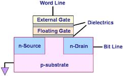

Flash Memory
Flash Memory
is a semiconductor memory device that is electrically erasable and
programmable in sections of memory called
'blocks'.
In a flash memory, a whole block of
memory cells can be erased in a single action, or in a 'flash,'
which is how this device got its name. Flash memory
is
non-volatile,
i.e., it can retain its memory contents even if it is powered off.
A basic flash
memory cell consists of a MOSFET that was modified to include an isolated
inner gate between its external gate and the silicon (see Figure 1).
This inner gate is known as a
'floating gate',
which is the
data-storing
element of the memory cell. Flash memory is not the first memory device to
use a floating gate to store information. The uv-erasable
EPROM,
which preceded the Flash memory, is also a 'floating gate' memory device.

Figure 1. A Typical Flash
Memory Cell
Data is
stored in a flash memory cell in the form of
electrical
charge
accumulated
inside the floating gate. The amount of charge stored in the floating
gate depends on the voltage applied to the external gate of the memory
cell that controls the flow of charge into or out of the floating gate.
The data contained in the cell depends on whether the voltage of the
stored charge exceeds a specified threshold voltage Vth or not.
Intel has
developed flash memory technology wherein memory cells can hold
two or more bits of
data instead of just one each. The trick is to take advantage of the
analog nature of the
charge stored in the memory cell and allow it to charge to several
different voltage levels. Each voltage range to which the floating
gate can charge can then be assigned its own digital code. Thus, a
2-bit cell can distinguish 4 distinct voltage ranges, while a 3-bit one
can distinguish 8 of them. Intel
calls this technology
'Multi-Level Cell (MLC)"
technology.
A typical MLC
consists of a single transistor with direct electrical connections to
its gate, source, and drain that allow very precise control of the
charging of the cell's floating gate. For a multi-level cell to
work, it must be able to deposit charge with precision, sense charge
with precision, and store charge over time.
High-precision
charging
and
charge sensing
are the key to a MLC's ability to distinguish several charge levels.
Table 1 illustrates how a 2-bit multi-level cell assigns digital codes
to 4 different charge voltage levels.
|
Table 1.
2-Bit Intel MLC Digital Code Assignment
|
|
Charge Level |
Digital Code |
|
Level 3 |
00 |
|
Level 2 |
01 |
|
Level 1 |
10 |
|
Level 0 |
11 |
|
MLC programming
is accomplished by
charging
the floating gate through a precise process of
Channel
Hot-Electron (CHE)
injection. During programming, the source of the MLC transistor is
usually grounded. Column decoding of the MLC provides direct bitline
connection to the drain which is pulsed at a constant voltage. Row
decoding of the MLC, on the other hand, provides direct wordline
connection that causes the MLC transistor gate to be connected to an
internally generated supply voltage. This direct and precise
control of the drain and gate is critical to the correct charging of the
floating gate and, hence, correct storage of information.
Reading the
contents of multi-level cells involves highly precise sensing of the
amount of charge in the floating gate, measured in terms of
cell currents
that have an
inverse
relationship with the Vth. The sensed currents are compared to reference
currents, with the comparison results inputted to a logic circuit that
encodes them into the corresponding digital data.
Flash memory
erasure is achieved by 'discharging' the floating gate through a
phenomenon known as
Fowler-Nordheim
tunneling,
wherein electrons from the floating gate pass through the thin
dielectric layer and get dissipated at the source of the memory cell
transistor.
Flash memory is
used in a variety of
applications
such as:
personal and notebook computers, digital cell phones, digital cameras,
portable memory devices, LAN switches, embedded controllers, etc.
See Also:
What is a
Semiconductor?;
EPROMs; SRAMs; DRAMs
HOME
Copyright
©
2005
www.EESemi.com.
All Rights Reserved.